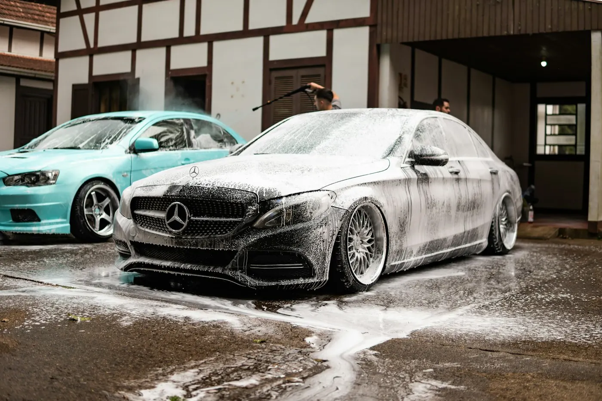
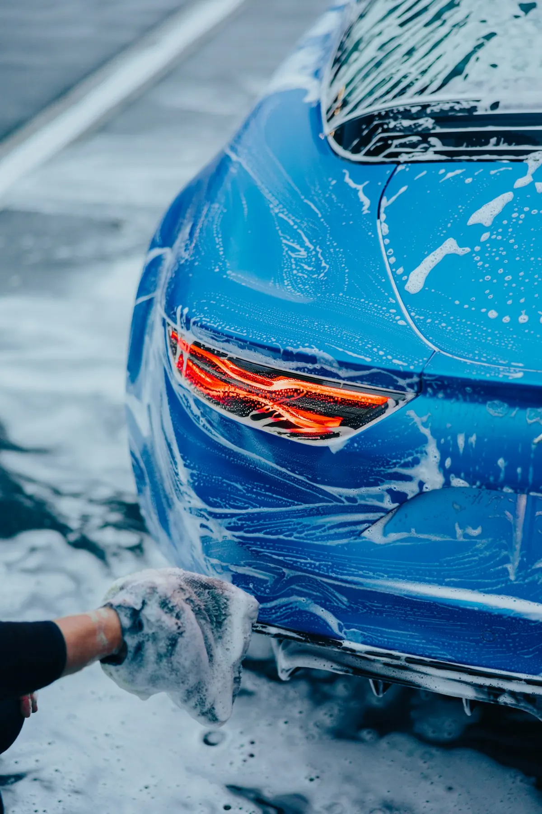
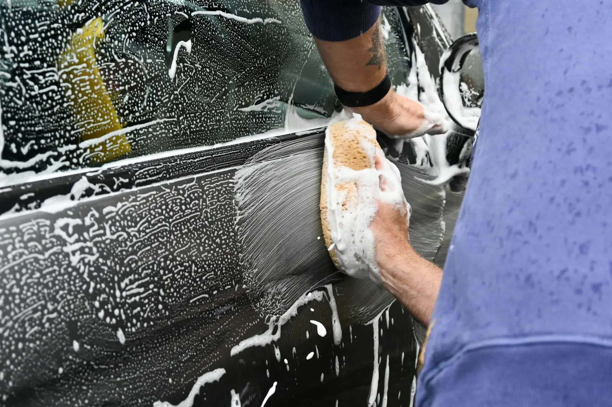
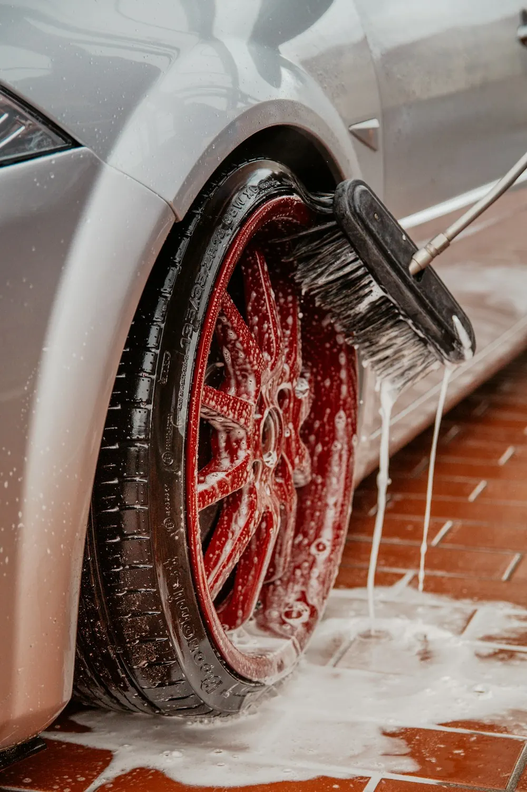
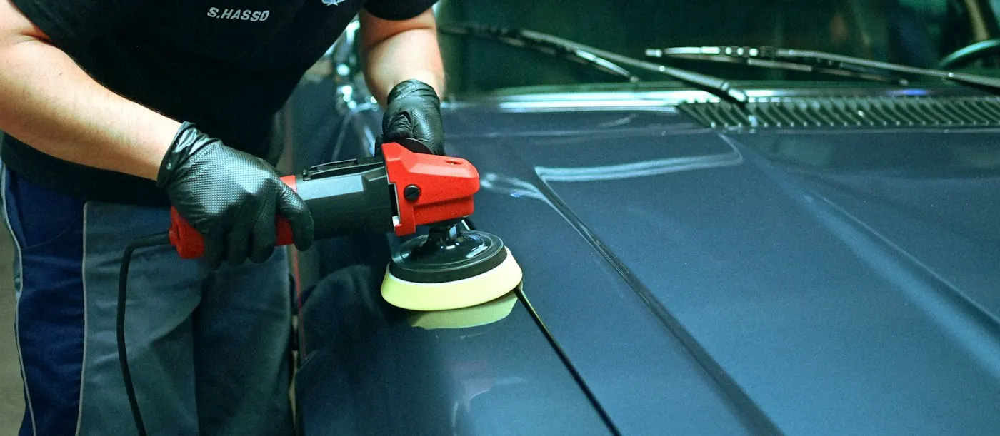
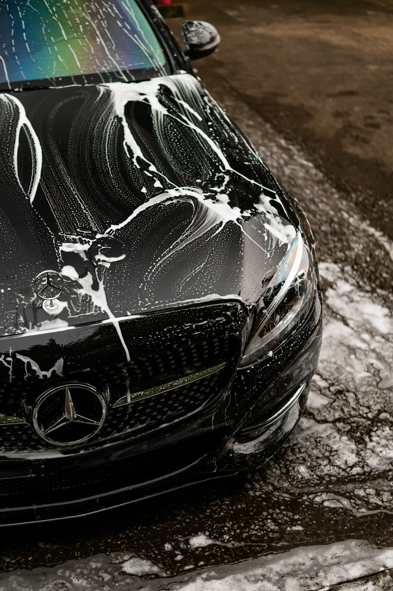
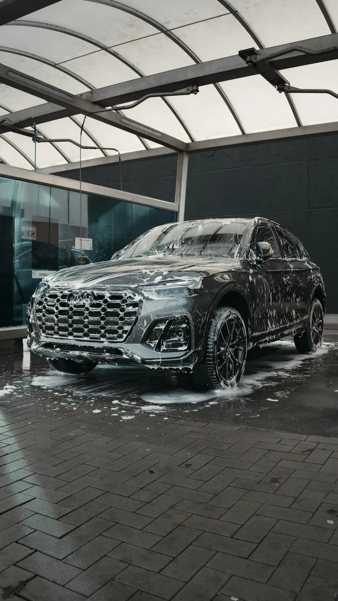
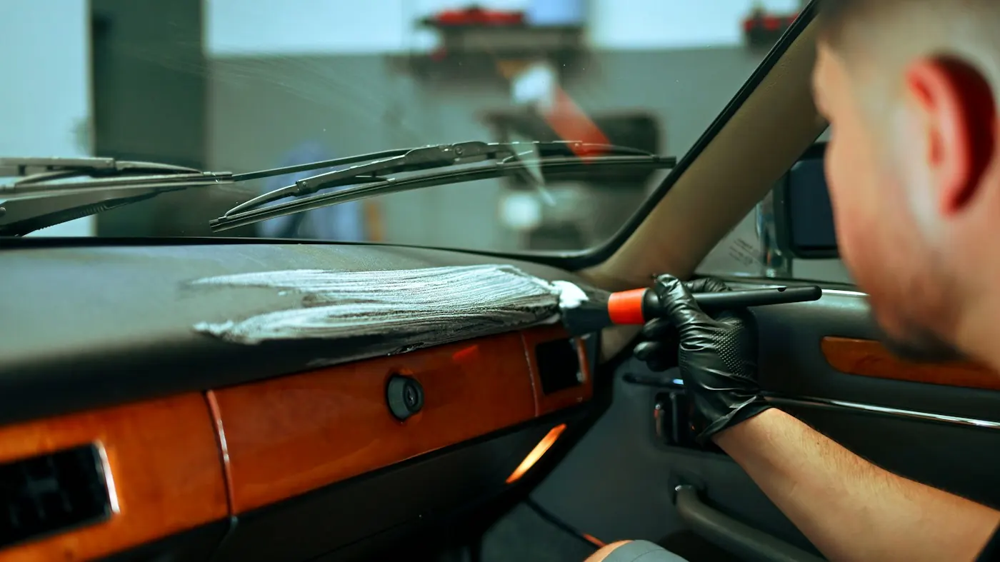
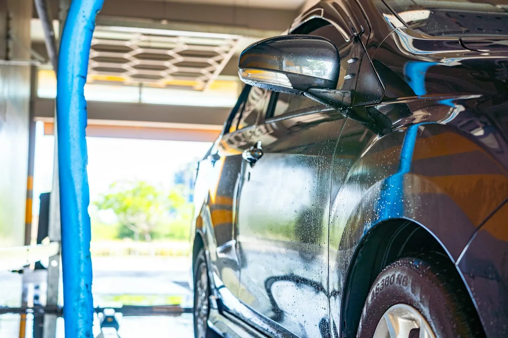

BuitenkantLak, ruiten en velgen
Inzepen, spoelen en met de hand afwerken. Geen borstels van een wasstraat, dus ook geen krasjes in je lak.
Achter SWASH zit Steven. Geen wasstraat en geen haast, wel aandacht tot in elke naad. Voor je eigen wagen, een auto die klaar moet voor de verkoop of de bestelwagens van je zaak.





Zetels, matten, dashboard, ruiten, lak en velgen. Je stapt weer in met dat gevoel van de eerste dag.
Een koper beslist bij de eerste blik. Steven maakt je wagen klaar voor de foto's en de bezichtiging.
Bestelwagens en bedrijfsauto's, binnen en buiten. Ook als het er meerdere tegelijk zijn.
Wat Steven doet
Of het nu je gezinsauto is of een vloot bestelwagens: van de matten tot de velgen gaat alles stap voor stap door Stevens handen.

BuitenkantInzepen, spoelen en met de hand afwerken. Geen borstels van een wasstraat, dus ook geen krasjes in je lak.
Voor de verkoop

“Ik kreeg mijn auto terug alsof hij nieuw was. Het verschil tussen voor en na is opvallend!”Uit een Google-review

BedrijfswagensVier grote bestelwagens binnen en buiten? Komt in orde.
Zetels, matten, dashboard en de hoekjes waar je zelf nooit aan toe komt.
Aanpak
Geen formulieren of ingewikkelde pakketten. Een berichtje volstaat en Steven laat snel weten wanneer je terecht kan.
Zeg wat voor wagen het is en wat er moet gebeuren. Een paar foto's helpen om in te schatten hoeveel werk erin zit.
Van maandag tot zaterdag, van 's morgens vroeg tot 's avonds laat. Er is bijna altijd een moment dat past.
Eerst binnen, dan buiten. Met de hand en met de tijd die je wagen nodig heeft.
En dan zie je het verschil. Proper tot in de hoeken waar je zelf nooit aan toe komt.

Tot in elke naad“Hij neemt zijn tijd en let op de kleine details. Daardoor zag mijn auto er weer als nieuw uit.”
Uit een Google-reviewOpeningsuren
Van maandag tot zaterdag, van 8u 's morgens tot 21u30 's avonds. Op zondag rust Steven uit.

Reviews
“Ik heb mijn wagen aan hen toevertrouwd voor de verkoop. De communicatie liep van in het begin vlot en de afspraak was snel geregeld, op het moment dat het mij paste. Ik kreeg mijn auto terug alsof hij nieuw was.”
“Swash heeft 4 grote bedrijfswagens binnen en buiten perfect gereinigd. Alles werd met de grootste zorg behandeld en de wagens zien er als nieuw uit! Uitstekend werk en een professionele aanpak 👍”
“Uitstekende service! De auto is tot in de perfectie gereinigd, hij is weer als nieuw 🤩 Een echte topper!”
Contact
Stuur Steven een berichtje of bel gewoon even. Hij laat je snel weten wanneer je terechtkunt.
Ik maakte deze demo voor jullie om te tonen wat er kan. Na een kort gesprek maak ik er iets veel persoonlijkers van, helemaal naar jullie wens.
Vrijblijvend. Ik kom langs of we bellen.
Op maat, op jullie eigen domein.
Geen voorschot. Jullie betalen pas als alles klaar is.
Hosting, domeinnaam en kleine wijzigingen, zoals nieuwe openingsuren.
Omdat een voorbeeld meer zegt dan een mail. Zo zien jullie meteen wat er kan, en het kost jullie niets.
Nee. Het gesprek is vrijblijvend. Vinden jullie het niks, dan is het daarmee gedaan.
Na ons gesprek staat jullie site binnen 10 tot 14 dagen online.
Zeker. Jullie domeinnaam kan gewoon blijven, de nieuwe site komt in de plaats van de oude.
Nee, dat doe ik op basis van ons gesprek. Eigen foto's zijn mooi meegenomen, maar niet nodig om te starten.